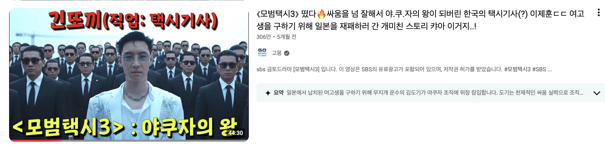

지난 해 봄 즈음, 채널 운영을 위해 직원들에게 월 100만 원이 넘는 AI플랫폼 토큰을 결제하기 시작했다. 유튜브 리뷰 영상을 제작하면서 자막 오타를 수정하거나 배우의 대사가 잘 들리지 않는 상황을 해결하기 위해 질문용으로 챗GPT 유료를 시작한 것이다. 특히 의학용어나 전문용어가 포함된 대사를 정확히 추론해야 하는 경우가 많았는데, 이때 챗GPT(Chat GPT)는 문맥을 기반으로 인물의 의도와 대사를 상당히 정확하게 분석해 주었다. 처음에는 단순 보조도구 정도로 생각했는데 사용하다 보니 AI가 단순 검색을 넘어 제작자의 사고를 확장시키는 도구라는 걸 체감하게 됐다.
유튜브 성공에는 운을 포함한 다양한 요소가 필요하지만, 가장 중요한 두 가지는 ‘클릭률(CTR)’과 ‘시청 지속 시간’이라고 생각한다. 이 중에서 가장 중요한 것은 클릭률이고 이 수치를 만들어내는 것은 썸네일(thumbnail)1)과 제목이다. 이 둘 중에서 더 중요한 것은 썸네일이다. 같은 영상이라도 썸네일 하나 차이로 조회 수가 2배, 많게는 10배 이상 차이 나는 경우를 정말 많이 봤다. 작은 이미지 하나가 영상의 운명을 바꾸는 셈이다.
예전에는 포토샵을 전문적으로 다루지 못했기 때문에 썸네일을 구현할 때 작품에서의 스틸샷을 주로 사용하고, 어설픈 합성을 자제하곤 했다. 그런데 “텍스트-투-이미지 AI(Text-to-Image AI)”2)가 등장하면서 상황이 완전히 달라졌다. 특히 구글의 이미지 생성 AI ‘나노 바나나(Nano Banana)’3)를 사용하기 시작한 뒤에는 내가 상상한 장면을 직접 구현할 수 있게 됐다. 예를 들어 <모범택시3> 관련 썸네일을 제작할 때 클릭률을 많이 받으려면, 주인공 뒤로 일본 범죄조직들이 대규모로 도열하고 있는 느낌의 장면이 필요했다. 그런데 작품 내에서는 주인공 단독 씬 위주라서 그런 장면은 찾아볼 수가 없었다. 그래서 나노 바나나를 통해 내가 구상한 썸네일 후킹 장면을 제작하기 시작했다. 처음에는 프롬프트에 입력한 의도와는 맞지 않는 결과물이 나왔다. 그러나 프롬프트를 점점 구체화하면서 마치 ‘코딩’을 하듯 구체적인 프롬프트로 개선해 나가자, 드디어 내가 원하는 썸네일의 구도가 나오기 시작했다. 해당 유튜브 영상은 2026년 4월 기준으로 현재 300만 조회수 이상을 기록하고 있다. 원하는 결과가 나올 때까지 프롬프트를 계속 정교하게 다듬는 작업이라고 본다.

[그림 1] AI를 활용한 <모범택시3> 썸네일 제작 사례
(출처: 유튜브 채널 ‘고몽’ 이미지 캡쳐)
그렇다. 이제는 AI와 ‘토론’을 한다. Gemini Live를 통해 내가 고른 썸네일이 고민될 때 두 이미지를 보여주고 시청자들의 시선을 끌고 호기심을 자극하며 손가락을 클릭으로 움직이게 할 이미지를 토론한다. AI와의 대화 속에서 나의 판단력은 명확해지고, 최고의 썸네일 한 장면을 선발하는데 효과적인 도움을 받곤 한다.
예전에 텍스트-투-비디오 AI가 출현하기 전에는 웹툰 리뷰 영상 하나를 만들기 위해 먼저 웹툰 제작사나 플랫폼으로부터 웹툰 이미지를 제공받고, 그 이미지를 소위 ‘누끼따기4)’를 통해서 포토샵으로 배경과 인물을 구분한다. 그리고 배경 위에서 인물들이 움직이는 효과를 주기 위해 인물의 이미지를 배경 위에서 따로 ‘트래킹5)’ 작업을 통해 마치 이쪽에서 저쪽으로 움직이거나, 확대되거나, 어스퀘이크(지진), 핸드쉐이킹(손떨림) 같은 이펙트를 입혀서 마치 애니메이션이 된 것처럼 생동감을 입히는 작업을 한다. 이 작업은 굉장히 고되고, 반복 작업이기 때문에 편집과 제작에 상당한 시간이 소요된다. 그런데, 이미지를 입력하고 프롬프트를 입력하면 이미지를 마치 영상처럼 애니메이션화 해주는 AI들이 등장하면서부터 이 작업의 속도는 비약적으로 빨라졌으며, 결과물의 퀄리티는 이전과 비교할 수 없이 유려해졌다. 실사화 느낌의 자연스러운 생동감과 함께 사운드까지 자동으로 생성되는 것을 원할 땐 Veo 3.1 등을 주로 활용하고 일러스트 느낌이 강하게 필요할 때는 미드저니(Midjourney)를 사용하곤 했다. 이외에 클링AI(Kling AI)나 최근에는 시댄스(SEEDANCE2.0)까지 다양한 AI들6)의 특징을 이해하고 내가 필요한 기능에 사용하고부터, 제작 효율이 폭발적으로 올라갔다. 체감상 편집 생산성이 10배 이상 증가했다고 본다.
“텍스트-투-뮤직(Text-to-Music) AI” 플랫폼 수노(SUNO)7)를 활용해 ‘고몽 구독송’을 직접 제작했다. 플랫폼에 가사를 집어놓고 원하는 테마, 속도감, 악기, 장르와 변칙성을 체크하면 알아서 곡이 제작된다. 이 구독송이 너무 경쾌하고, 심지어 나 ‘고몽’의 목소리를 기반으로 제작했기 때문에 실제로 내가 부른 것 같은 결과를 만들어 냈다. 이 구독송을 실제로 영상 후반에 삽입한 결과 댓글에선 “고몽님 노래 잘한다.”, “이 노래 어디서 들을 수 있냐?” 등의 글이 달리기도 했다. 중간 중간 유머러스한 멘트가 필요한 부분에선 웃긴 대사와 함께 곡을 만들어 삽입하기도 했고 그런 부분들엔 후에 댓글에 타임스탬프가 달리는 등 긍정적인 시청 반응을 만들어 냈다.
노트북LM(NotebookLM)8) 같은 서비스다. 사실 기존 AI플랫폼들은 유튜브 링크를 읽지 못하거나, 원하는 결과를 내지 못했다. 그런데 구글의 AI들은 자회사인 유튜브의 링크를 활용하는 권한을 가졌고, 특히 노트북LM은 더욱 더 드라마틱한 결과를 만들어줬는데, 유튜브 링크나, PDF 파일로 된 연구자료를 업로드하면, 해당 내용을 학습하고 이해, 요약하여 마치 두 사람이 팟캐스트로 대화하는 듯한 오디오 자료까지 만들어주기 때문이다. 특히 어려운 내용을 쉽게 풀이해서 질문과 답변을 주고받는 두 인물의 대화 속에서 이용자의 이해력을 높일 수 있는 장치로 활용할 수 있다. 그리고 이러한 기능을 응용하여, 최신 인사이트와 연구자료를 애니메이션화하여 유튜브로 소개하는 채널들까지 등장했다.
이후에 혜성처럼 등장한 엔트로픽 사의 클로드도 인상 깊다. 클로드는 현재 글쓰기 기능으로는 최고의 평가를 받고 있고, 이외에도 발표자료를 제작해 내는 능력부터, 클로드 코드를 활용한 바이브 코딩으로 어플 만들기를 대세로 만든 주역이 되었다. 클로드를 활용하면 엑셀, 파워포인트 같은 본인이 주로 사용하는 소프트웨어의 권한을 클로드와 연결해 더욱 세밀한 작업이 가능하고 이외에 크롬과 같은 브라우저의 권한도 연결해서 액티브한 기능을 구현할 수 있다. 그야말로 영화 <아이언맨>의 ‘자비스’같은 에이전트 AI가 현현한 상황이다.
1년 전만 해도 지금과 같은 AI활용이 시기상조라고 보는 시각도 있었고, 2년 전만 해도 챗지피티를 써보지 않은 사람들이 많았다. 그런데 지금은 검색엔진 기능을 하던 유튜브를 대체한 것을 넘어 AI로 모든 정보를 습득한다. 이제 AI는 크리에이터 생태계에서는 쓰지 않는 채널과 쓰는 채널의 생존력을 좌우하는 중요한 요소가 되었고, 그 영향력은 점진을 뛰어넘어 기하급수적으로 커지고 있다. 체감상 챗지피티 실용화 2년 안에 이런 변화가 있었는데, 근 5년, 그리고 10년 후에는 도대체 어떤 기능과 활용도의 AI가 등장할지 가늠조차 되지 않는다. 이제는 상상력의 경지를 넘어 구분 불가능한 완성도가 갖춰지지 않을까 싶다. 불쾌한 골짜기(Uncanny Valley)9)라고 불리는 자연을 모방한 인공적인 것들의 간격이 완전히 메워진 AI의 결과물들 말이다. 그리고 그런 완성도 있는 쓰임새로 인해 끝없이 아이디어를 구현해서 시청자들에게 평가 받아야하는 생존 경쟁에 있는 크리에이터로서는 이 AI의 격변이 사뭇 반갑다.
특히 1인 미디어라고 표현하는 소기업 스튜디오 시스템이 대다수인 크리에이터, 인플루언서들에게는 컴퓨터와 전기, 인터넷선만 있으면 대기업의 생산력과 결과물에 비등하는 결과를 낼 수 있는 이 변화가 너무나 달갑다. 예전에 크리에이터가 등장한 초기에 이 직업을 ‘디지털 노마드’라며 자유로운 직업으로 표현한 시기가 있었다. 그런데 수많은 크리에이터들이 등장하고 취미 영역의 인플루언서들까지 등장하며 촬영이라는 번거로운 작업과 편집이라는 단순반복 노동의 작업이 결코 자유롭지 않는, ‘디지털 가내수공업’ 이라는 걸 깨닫게 되었다. 그러나 현재의 AI분수령이 시작된 이후 크리에이터들의 디지털 노마드화는 꿈이 아니게 되었다. 이제는 촬영만 폰으로 간단히 해놓으면, 편집까지 자동으로 해주고, 자막까지 달아주고 오타교정까지 해주며, 편집효과까지 적용되어, 업로드까지 자동으로 해주는 AI까지 등장하고 있기 때문이다.
모든 AI를 다 잘 아는 ‘초전문가’는 아직 거의 없다고 생각한다. 중요한 건 “내 작업에 필요한 AI를 얼마나 정확하게 선택하고 활용하느냐”다. 현재의 추세는 자신의 작업에 필요한 기능을 가진 AI를 찾아 그 기능을 주력으로 사용하면서 기존에 제작하던 ‘콘텐츠의 완성도’과 ‘전문성’에 ‘AI의 생산력’을 더해 날개를 다는 크리에이터들이 AI활용도의 강자로 평가 받고 있다. 모든 분야를 섭렵하고 그 기능을 활용해 최고의 결과를 만들어가는 ‘김햄찌’ 같은 크리에이터는 극소수라고 본다.
예전에 누군가 내게 언제까지 유튜브를 할 것이냐고 물었을 때 고민 없이 “앞으로 10년 만 더 유튜브에서 살아남는 겁니다. 유튜브 오래 하고 싶습니다.” 라고 한 적이 있다. 그리고 유튜브 시작 후 나는 매년 주변인들에게 “내가 내년에 당장 도태되거나, 채널이 사라질 수 있다. 망하는 건 당장 내일일 수도 있다.” 고 말한다. 유튜브가 주는 왕관의 무게, 무대의 높이 딱 그만큼 생존하기 어려운 환경, 다양한 리스크, 크리에이팅의 버거움이 나를 짓눌렀기 때문이다. 지금은 조금 달라졌다. AI에 빠르게 자원을 투입해 고몽 팀원들을 성장시켰고, 나 역시 AI를 활용해 나의 작업의 결과물을 향상시켰다는 자신감이 생겼기 때문이다.
빠르게 업데이트, 업그레이드, 업스케일 되는 AI 아수라장-요지경 속에서 내가 살아남는 방법은 정답지가 없어, 나침반 없이 정글에서 살아남아야 했던 유튜브의 생존의 결을 닮아 있었다. 나와 또 다른 크리에이터들 그리고 AI를 활용한 모든 제작자들에게 있어 지금은 만화 <원피스(ONE PIECE)>의 ‘대해적시대’10)와 맞먹는 가장 위험하면서도 가장 기회가 되는 바로 그런 시대가 되었다. 새 시대의 바람이 무섭게 불고 있다. 서 있으면 무서운 바람이, 배를 타면 순풍이 된다. 지금 당장 돛을 펴고 AI의 바다로 나아가야 한다고 생각한다.
생성형 AI의 발전은 콘텐츠 제작의 진입장벽을 빠르게 낮추고 있다. 과거에는 전문 인력과 높은 제작비가 필요했던 작업들이 이제는 다양한 AI 도구를 통해 개인 창작자 수준에서도 가능해지고 있다. 그러나 기술 접근성이 높아질수록 오히려 더 중요해지는 것은 ‘무엇을 만들 것인가’에 대한 창작자의 기획력과 콘텐츠 감각이다. 이번 인터뷰에서 고몽은 AI를 단순 자동화 도구가 아니라 자신의 아이디어를 확장하고 제작 효율을 높이는 창작 파트너로 활용하고 있었다. 특히 프롬프트를 반복적으로 수정하며 원하는 결과물을 만드는 과정, AI와 썸네일 구도와 감정을 함께 분석한다는 설명은 AI 시대의 새로운 창작 방식을 상징적으로 보여준다. 결국 생성형 AI 시대의 경쟁력은 기술 자체보다 이를 자신의 전문성과 어떻게 결합하느냐에 달려 있다. 같은 AI 도구를 사용하더라도 어떤 아이디어를 구현하고 어떤 콘텐츠 경험을 만들어 내느냐에 따라 결과는 달라질 수밖에 없다. AI가 콘텐츠 제작의 효율을 높여주는 시대일수록, 인간 창작자의 해석력과 기획력은 더욱 중요한 가치로 남게 될 것이다.